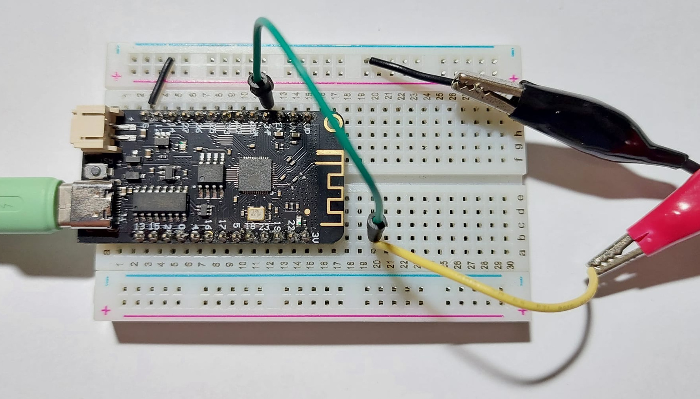
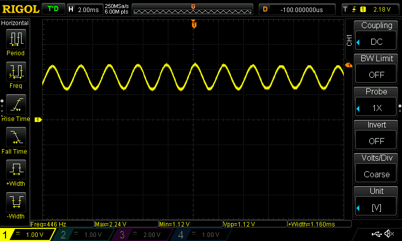

การใช้งานโมดูล MAX4466 Sound Sensor#
▷ MAX4466 Electret Microphone Amplifier#
ในบทความนี้กล่าวถึง การทดลองใช้งานโมดูล GY-MAX4466 ที่มีราคาไม่แพง และใช้ไอซี MAX4466 ของบริษัท Maxim Integrated / Analog Devices สำหรับการขยายสัญญาณแอนะล็อก จากไมโครโฟนเสียงประเภท ** Electret Condenser Microphone และสามารถปรับอัตราการขยายสัญญาณได้ (Adjustable Gain**)
รูป: ตัวอย่างวงจรสำหรับการใช้งานไอซี MAX4466 (ปรับค่า Gain ไม่ได้)
รูป: ผังวงจรของโมดูล MAX4466 Electret Microphone Amplifier ของบริษัท Adafruit (ปรับค่า Gain ได้)
คุณลักษณะของโมดูล GY-MAX4466
- โมดูลมีขาสำหรับการเชื่อมต่อ 3 ขา
- ขา VCC (Supply Voltage: 2.4V ~ 5V)
- ขา GND (Ground)
- ขา OUT (Analog Output)
- สัญญาณเอาต์พุตที่ขา OUT เป็นแบบ DC-biased และระดับแรงดันไฟฟ้าจะอยู่ที่ประมาณ VCC/2 (ถ้าไม่มีเสียง) และมีค่าแอมพลิจูดประมาณ 1Vpp (peak-to-peak)
- มีตัวต้านทานปรับค่าได้ (Trimpot / Potentiometer) ขนาด 100k เพื่อปรับเลือกค่าอัตราการขยายสัญญาณ (ปรับค่าได้ในช่วงประมาณ 25 ~ 125 เท่า)
รูป: ตัวอย่างโมดูล MAX4466 (มุมมองด้านหน้าและด้านหลัง)
อีกตัวอย่างหนึ่งสำหรับโมดูลไมโครโฟนเสียงในประเภทเดียวกันคือ MAX9814 Microphone Amplifier ซึ่งมีไอซีขยายสัญญาณที่ได้จากไมโครโฟนเสียงประเภท ** Electret Condenser Microphone และมีการปรับอัตราขยายแบบอัตโนมัติได้ในขณะทำงาน (Automatic Gain Control) และเลือกอัตราขยายสูงสุดได้ 3 ระดับ คือ 40dB / 50dB / 60dB ตอบสนองต่อความถี่เสียงได้ดีในย่าน 20Hz – 20 kHz สัญญาณเอาต์พุตเป็นแบบแอนะล็อก มีแอมพลิจูดไม่เกิน 2Vpp และมีค่ากลางอยู่ที่ 1.25V (DC bias) โดยประมาณ แรงดันไฟเลี้ยงใช้ได้อยู่ในช่วง 2.7V ~ 5.5V **
รูป: ตัวอย่างโมดูล MAX9814 (มุมมองด้านหน้าและด้านหลัง)
▷ การอ่านค่าสัญญาณจากโมดูล MAX4466 ด้วย Arduino-ESP32#
ถัดไปเป็นตัวอย่างโค้ดสำหรับ Arduino-ESP32 v3.0.0 เพื่ออ่านค่าสัญญาณแอนะล็อกจากโมดูล MAX4466 (ใช้แรงดันไฟเลี้ยง VCC=+3.3V) โดยใช้วงจร ADC ของไมโครคอนโทรลเลอร์ ESP32 และรับสัญญาณอินพุตเข้าที่ขา GPIO34
การอ่านค่าสัญญาณอินพุตจะเกิดขึ้นด้วยอัตราคงที่ โดยมีการเปิดใช้งานวงจรตัวนับ หรือ Hardware Timer ของ ESP32 ให้นับขึ้นด้วยความเร็ว 1MHz (หรือความละเอียดในการนับ 1usec) และเปิดใช้งานอินเทอร์รัพท์เมื่อนับตามช่วงเวลา (Time Interval) ที่ได้กำหนดไว้ ซึ่งเป็นตัวกำหนดความถี่ในการอ่านค่า (Sampling Rate) เช่น 10kHz
เมื่อมีการนับตามจังหวะได้หนึ่งรอบตามช่วงเวลาที่ได้กำหนดไว้ จะเกิดอินเทอร์รัพท์และมีการเริ่มต้นนับใหม่ที่ 0
และมีการเรียกฟังก์ชันที่ทำหน้าที่เป็น Callback Function หรือ ISR
(Interrupt Service Routine)
(ฟังก์ชันชื่อ timer_callback ในโค้ดตัวอย่าง) ถ้าตัวแปรสำหรับเงื่อนไข sampling มีค่าเป็น true
ก็จะมีการอ่านค่าสัญญาณแอนะล็อกและบันทึกค่าที่ได้ลงในอาร์เรย์ที่ได้เตรียมไว้ (samples[])
เมื่อฟังก์ชัน timer_callback() ทำงานในแต่ละครั้ง ขา GPIO สำหรับ LED
จะมีลอจิกเป็น High และเมื่อจบการทำงานของฟังก์ชันจะมีลอจิกเป็น Low
ดังนั้นถ้าวัดสัญญาณเอาต์พุตนี้ด้วยออสซิลโลสโคป จะทำให้เห็นช่วงเวลาในการทำงานของฟังก์ชันนี้
ตัวแปร sampling เริ่มต้นมีค่าเป็น false ดังนั้นจึงจะไม่มีการอ่านค่าอินพุต
จนกว่าจะมีการส่งข้อความใด ๆ ก็ได้มาหนึ่งบรรทัด จึงจะเริ่มต้นการอ่านและบันทึกข้อมูล
การอ่านค่าสัญญาณแอนะล็อกด้วย ADC จะได้เป็นเลขจำนวนเต็ม (ขนาด 12 บิต) โดยใช้ฟังก์ชัน
analogReadMilliVolts(...) ได้ค่าเป็นตัวเลขที่มีหน่วยเป็นมิลลิโวลต์
เมื่อเก็บค่าลงในอาร์เรย์จนครบตามจำนวน (ตั้งค่า N ไว้เท่ากับ 1024)
ก็จะหยุดการอ่านสัญญาณอินพุตและบันทึกข้อมูลในอาร์เรย์ชั่วคราว
และถัดไปจะมีการส่งข้อมูลทั้งหมด แปลงให้เป็นข้อความ หนึ่งค่าตัวเลขต่อหนึ่งบรรทัด
ส่งออกไปตามลำดับทาง Serial Port โดยใช้ค่า Baudrate เท่ากับ 921600
เมื่อส่งข้อมูลได้ครบตามจำนวนที่ต้องการแล้ว จึงเริ่มการอ่านสัญญาณอินพุตและบันทึกค่าในรอบถัดไป
const int ADC_PIN = 34; // ADC1_CH6 / GPIO34 pin
const int LED_PIN = 22; // LED pin
uint32_t sample_index = 0;
bool sampling = false;
QueueHandle_t adc_queue;
const uint32_t Fs = 10000; // Sampling frequency (Hz)
const uint32_t N = 1024; // Number of samples
uint32_t sample_count = 0;
uint16_t samples[N];
//----------------------------------------------------------------
// Callback function of the hardware timer.
void IRAM_ATTR timer_callback() {
if (!sampling)
return;
digitalWrite( LED_PIN, HIGH );
uint16_t value = (uint16_t)analogReadMilliVolts( ADC_PIN );
samples[sample_count++] = value;
if ( sample_count == N ) {
sampling = false;
sample_count = 0;
BaseType_t xHigherPriorityTaskWoken = pdFALSE;
xQueueSendFromISR(adc_queue, &sampling, &xHigherPriorityTaskWoken);
if (xHigherPriorityTaskWoken == pdTRUE) {
portYIELD_FROM_ISR();
}
}
digitalWrite( LED_PIN, LOW );
}
// Initialize the ADC input channel.
void initADC() {
// Set ADC resolution to 12 bits
analogSetWidth( 12 );
// Set attenuation level to 11 dB.
analogSetPinAttenuation( ADC_PIN, ADC_11db );
}
// Initialize the hardware timer.
void initTimer( uint32_t hw_timer_unit=0 ) {
static hw_timer_t *timer = NULL;
timer = timerBegin( 1000000UL ); // 1MHz (1us tick)
timerWrite(timer, 0);
// Attach the callback function (ISR) to the timer
timerAttachInterrupt( timer, &timer_callback );
timerAlarm(timer, 1000000UL/Fs /*interval*/,
true /*reload*/, 0 /*reload value*/);
timerRestart(timer);
}
void setup() {
Serial.begin(921600);
Serial.setTxBufferSize(1024);
Serial.flush();
pinMode( LED_PIN, OUTPUT );
digitalWrite( LED_PIN, LOW );
adc_queue = xQueueCreate(1, sizeof(uint32_t));
initADC(); // Initialize the ADC.
initTimer(); // Initialize the hardware timer.
}
void loop() {
uint32_t flag;
while (Serial.available()) {
if (Serial.read() == '\n') {
sampling = true; // Start the ADC sampling process.
}
}
// Wait for an event from the ISR (with 5 msec timeout).
if (xQueueReceive(adc_queue, &flag, 5)) {
// Send out the samples.
for ( uint32_t i=0; i < N; i++ ) {
Serial.printf("%lu\n", samples[i] );
}
Serial.flush();
sampling = true; // Restart the ADC sampling process.
}
}
การวัดสัญญาณที่ขา LED เมื่อทดสอบการทำงานของโค้ดตัวอย่าง จะทำให้เห็นช่วงเวลาในการทำงานของ ISR
รูป: ช่วงเวลาที่มีการทำงานของ ISR ตามจังหวะของ Hardware Timer เพื่ออ่านค่าจากสัญญาณแอนะล็อก
จากรูปจะเห็นได้ว่า มีการเกิดอินเทอร์รัพท์และการทำงานของ ISR หรือ Callback Function ทุก ๆ 100 usec (หรือ 10kHz Sampling Rate) และใช้เวลาในการทำงานประมาณ 50 usec (ช่วงที่ LED มีสถานะเป็น High)
รูป: ช่วงเวลาที่มีการทำงานของ ISR และช่วงเวลาที่ส่งข้อมูลออกทาง Serial Port
จากรูปจะเห็นได้ว่า ช่วงที่ไม่มีการทำงานของ ISR สถานะลอจิกของ LED จะเป็น Low และเป็นช่วงที่มีการส่งข้อมูลออกทาง Serial Port โดยใช้เวลาประมาณ 52 msec
การทดสอบการทำงานของระบบ แนะนำให้เริ่มต้นด้วยการสร้างสัญญาณภายนอกจากเครื่องกำเนิดสัญญาณ (Function Generator) เช่น สัญญาณรูปคลื่นไซน์ Vpp=2V, DC Offset=1.5V, Frequency=440Hz แล้วป้อนเข้าที่ขา ADC Input (GPIO34) แล้วแสดงกราฟข้อมูลด้วย Arduino Serial Plotter (ตั้งค่า Baudrate เท่ากับ 921600)
รูป: ตัวอย่างสัญญาณทดสอบจาก Function Generator และวัดสัญญาณด้วยออสซิลโลสโคป
รูป: การแสดงลำดับข้อมูลที่ได้รับในรูปของกราฟสัญญาณด้วย Arduino Serial Plotter

รูป: การต่อวงจรทดลองเพื่อวัดสัญญาณแอนะล็อกจากเครื่อง Function Generator
▷ การทดสอบด้วยสัญญาณเสียง#
ถัดไปเป็นตัวอย่างการทดสอบด้วยสัญญาณเสียง และใชโมดูล MAX4466 เป็นเซนเซอร์สำหรับสัญญาณเสียง โดยนำสัญญาณเอาต์พุตที่ได้ ไปต่อเข้ากับขา ADC Input (GPIO34) ของบอร์ด ESP32
จากนั้นลองเปิดเสียงความถี่คงที่โดยใช้คอมพิวเตอร์ เช่น การเปิดคลิปจาก YouTube ที่สร้างสัญญาณเสียงความถี่ 440Hz https://www.youtube.com/watch?v=xGXYFJmvIvk และเปิด Arduino Serial Plotter เพื่อแสดงลำดับข้อมูลที่ได้รับในรูปของกราฟสัญญาณ
รูป: การต่อวงจรทดลองโดยใช้โมดูล MAX4466

รูป: การวัดสัญญาณจากโมดูล MAX4466 ด้วยออสซิลโลสโคป แสดงผลในโหมด DC Coupling Mode วัดค่าแอมพลิจูดได้ประมาณ 1.12Vpp (peak-to-peak)

รูป: ตัวอย่างสัญญาณที่มีแอมพลิจูดมีค่าประมาณ 0.76Vpp (peak-to-peak) เนื่องจากเพิ่มระยะห่างระหว่างโมดูล MAX4466 กับลำโพงเสียงของคอมพิวเตอร์
รูป: ตัวอย่างสัญญาณจากโมดูล MAX4466 แสดงผลในโหมด AC Coupling Mode (แอมพลิจูดได้ประมาณ 1Vpp)
รูป: ตัวอย่างสัญญาณจากโมดูล MAX4466 แสดงผลในโหมด AC Coupling Mode (แอมพลิจูดได้ประมาณ 0.68Vpp)
หากลองเปลี่ยนเป็นสัญญาณเสียงของ Piano เช่น เล่นโน้ตดนตรี A4 (440Hz) โดยมีการเว้นระยะเวลาและวนซ้ำไปเรื่อย ๆ (https://www.youtube.com/watch?v=1af5Ms62RDQ) แล้ววัดสัญญาณเสียงด้วยโมดูล MAX4466 ก็มีตัวอย่างดังนี้
รูป: การวัดสัญญาณด้วยออสซิลโลสโคป ในโหมด FFT (Fast-Fourier Transform) เพื่อดูสเปกตรัมของสัญญาณตามความถี่
รูป: สัญญาณเสียงเมื่อวัดด้วยออสซิลโลสโคป (Time/Div = 100msec)
รูป: สัญญาณเสียงเมื่อวัดด้วยออสซิลโลสโคป (Time/Div = 500usec)
รูป: การแสดงลำดับข้อมูลที่ได้รับจาก ESP32 โดยใช้ Arduino Serial Plotter
▷ กล่าวสรุป#
บทความนี้ได้นำเสนอการใช้งานโมดูลที่มีไอซี MAX4466 ของบริษัท Maxim Integrated / Analog Devices สำหรับการขยายสัญญาณแอนะล็อก จากไมโครโฟนเสียงประเภท ** Electret Condenser Microphone และตัวอย่างการเขียนโค้ด Arduino Sketch สำหรับ ESP32 เพื่ออ่านค่าสัญญาณแอนะล็อกจากโมดูลเสียงด้วยวงจร ADC และส่งค่าออกทางพอร์ต Serial** และสามารถนำข้อมูลไปใช้ในการประมวผลด้วยคอมพิวเตอร์ในขั้นตอนต่อไปได้
บทความที่เกี่ยวข้อง
This work is licensed under a Creative Commons Attribution-ShareAlike 4.0 International License.
Created: 2023-11-14 | Last Updated: 2023-11-17